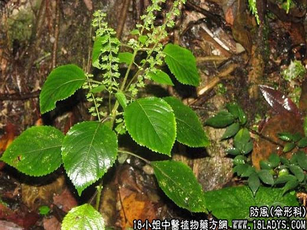

【中药概述】
防风为伞形科草本植物防风的根。辛、甘，微温。归膀胱、肝、脾经。
1．祛风解表：用于外感风邪，恶寒发热、头痛、身痛等证，有祛风解表作用。治感冒风寒常与荆芥，羌活等同用；若感冒风热则与荆芥，薄荷，连翘同用。如（荆防败毒散）、（<外科正宗>玉屏风散）。
2．胜湿止痛：用于风湿痹证，关节疼痛，肢体拘挛等，如（<百一选方>蠲痹汤）、（<证治准绳>防风汤）。
3．祛风解痉：用于风毒内侵的破伤风，证见牙关紧闭、抽搐痉挛等。能祛风解痉，如（玉真散、凉惊丸）。
4．祛风止痒：用于风疹、皮肤瘙痒等，如（防风丸）。
【药效鉴别】
防风性善升浮走表，入肝经气分，防治诸风、头痛之要药。故用于肝郁伤脾而致腹痛、腹泻，如<痛泻要方>。
【临证应用】
治疗砷中毒：取防风，绿豆，红糖，甘草水煎分二次服，14天为一疗程。
【药理作用】
防风根的水煎剂或鲜根榨出液，对绿脓杆菌及金黄色葡萄球菌有一定的抗菌作用。
【化学成分】
含挥发油、甘露醇、苦味甙、酚性物质、多糖类、有机酸等。
【用量用法】
6——30g，水煎服。
【使用注意】
血虚发痉及阴虚火旺者不宜。
【注】
防风有关防风、川防风和云防风三种，而以关防风为主。
川防风（为伞形科藁本属短片藁本）。甘，辛，温。主产四川和贵州部分地区（自销）。
发表镇痛，祛风胜湿：用于外感，头痛昏眩，关节疼痛，四肢拘挛，目赤疮疡及破伤风等。
云防风（为伞形科西风芹属竹叶防风）。甘，辛，温。主产云南、四川、贵州等地（自销）。
解表祛风，胜湿：用于感冒，风寒湿痹，痈肿疮疡，破伤风等症。